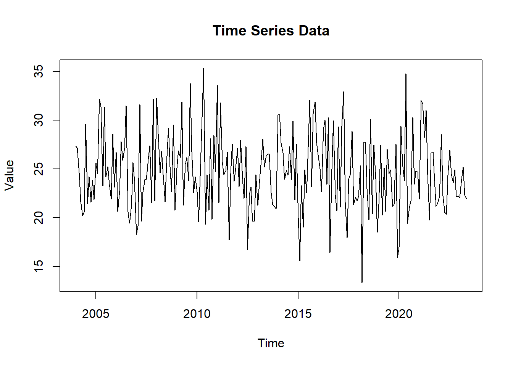
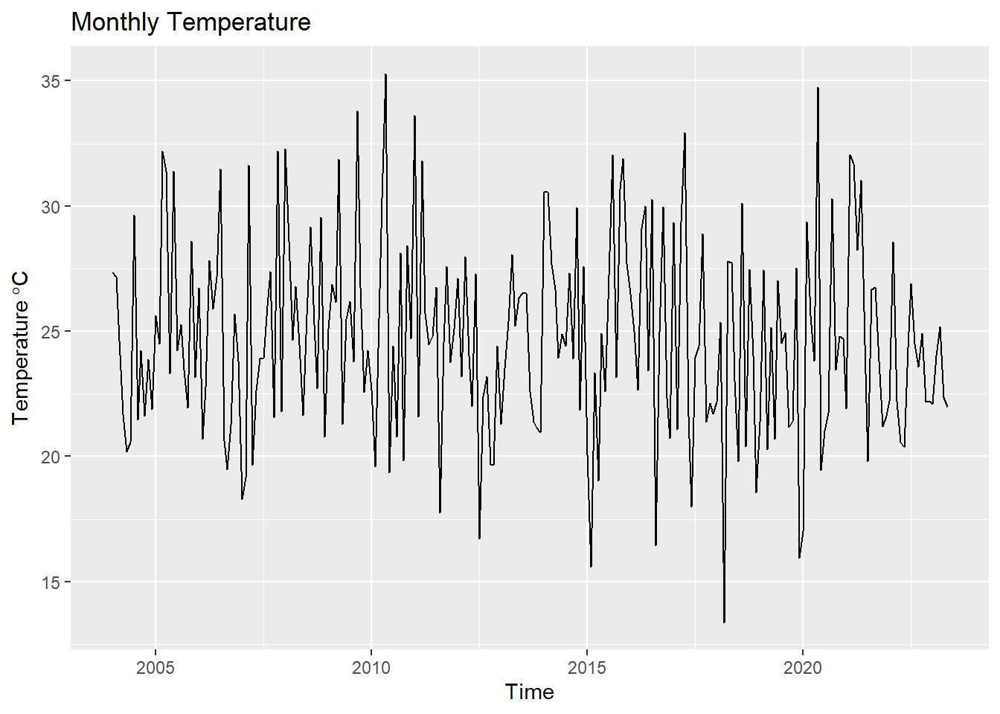
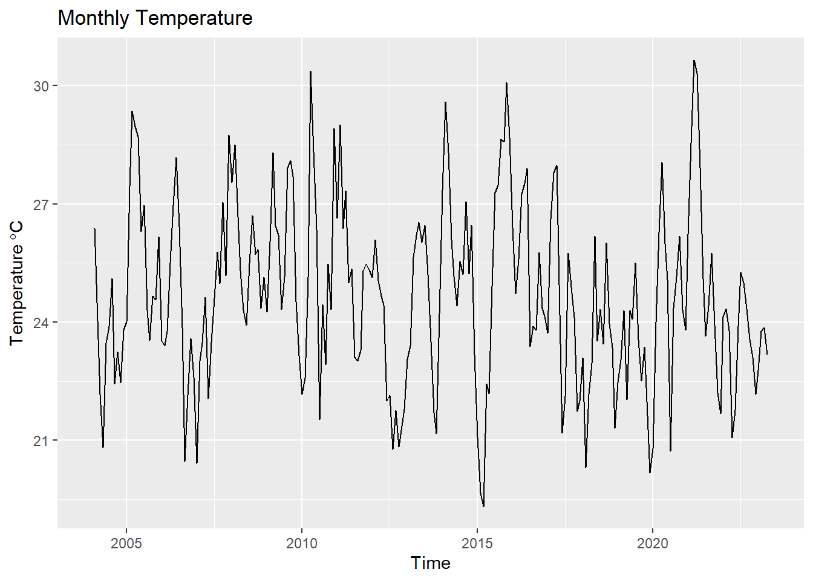
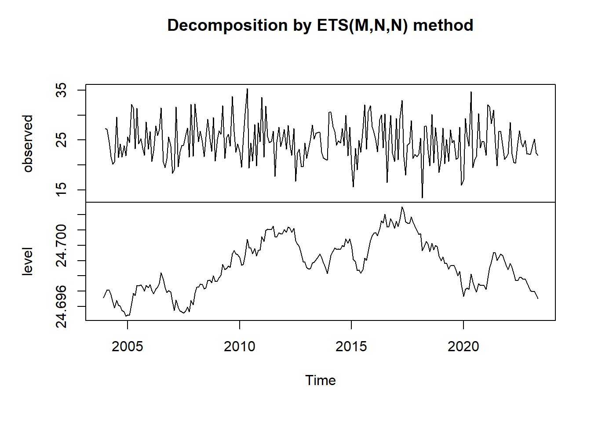
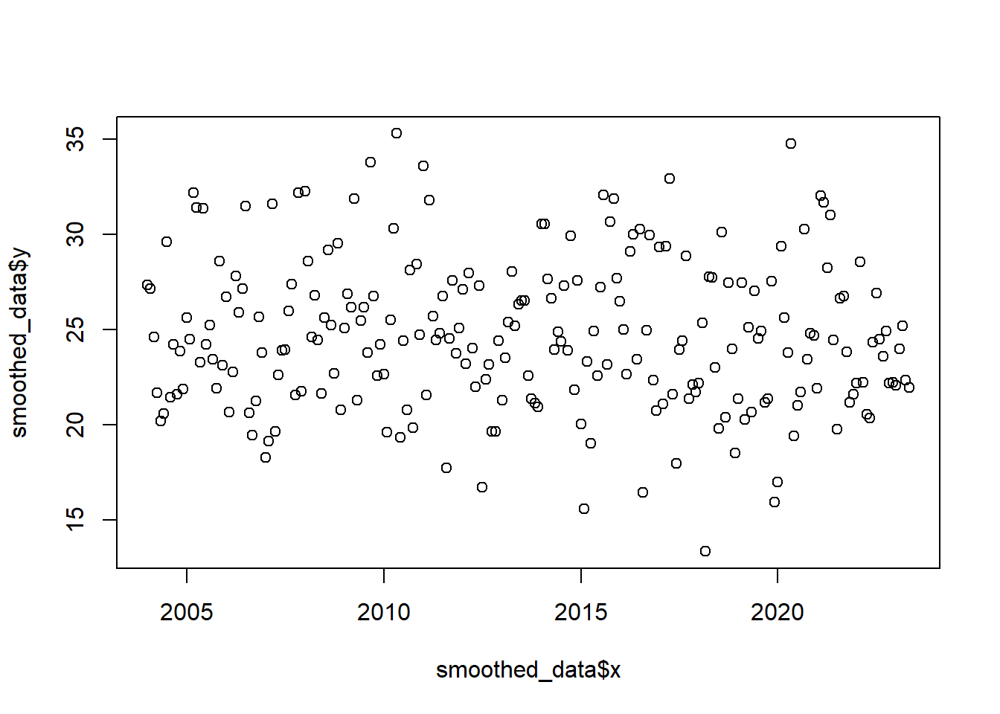
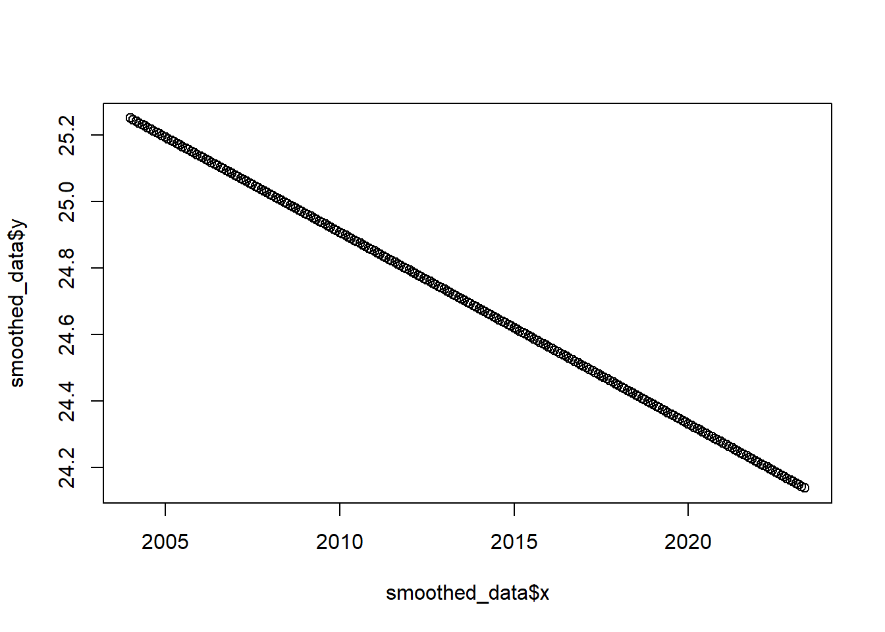

[1] "2023-06-19"4 Time and Date
In this chapter, our primary focus is on working with data that represents time, specifically dates. We aim to equip you with the skills to visualize your data using graphical functions and to define custom functions. By the end of this chapter, you will have a better understanding of how to work with time-based data and how to present it in a meaningful way. Whether you are a data analyst or a researcher, these skills are essential for making informed decisions and communicating your findings effectively. So, let’s dive in and explore the exciting world of time-based data analysis!
4.1 Dates
Dates play a crucial role in data analysis and represent an essential component in many datasets. In R, working with dates is made easy through a range of functions and packages specifically designed for handling date-related operations. Dates in R are represented as objects, allowing for convenient manipulation and calculations.
With R’s built-in date functions and packages like lubridate, users can create, format, and perform various operations on date objects. These operations include extracting components like year, month, and day, performing arithmetic operations to calculate time intervals, comparing dates, and visualizing temporal data. With the flexibility and functionality offered by R, users can effectively work with dates to gain valuable insights and make informed decisions based on temporal patterns in their data.
4.1.1 Date and time classes in R
In R, there are specific classes designed for representing times and time-series data. These classes provide specialized functionalities for handling temporal information. Some of the commonly used classes include:
POSIXct: This class represents time as the number of seconds since January 1, 1970 (known as the Unix epoch) in the UTC time zone. It offers precision up to the second and is suitable for handling timestamps.
POSIXlt: Similar to the POSIXct class, POSIXlt represents time as the number of seconds since the Unix epoch. However, it provides more detailed components like year, month, day, hour, minute, and second. POSIXlt objects are useful when you need to work with individual time components.
Date: The Date class is used to represent dates without time information. Dates are stored as the number of days since January 1, 1970. This class is useful when you want to work with dates and perform date-specific operations.
Time-Series: R provides the
tsclass to handle time-series data, which is a combination of time and corresponding data values. Thetsclass allows for efficient storage and manipulation of time-series data and supports various time-based operations.xts: The
xts(eXtensible Time Series) class is an extension of thetsclass and provides enhanced functionality for working with time-series data. It includes features like subsetting, merging, and advanced time-based calculations.
These specialized classes make it easier to work with time and time-series data in R. In this book, we will only be working with the Date class, which is used to represent times of type date.
4.1.2 Working with Date objects
4.1.2.1 Today’s date
The Date data structure is the simplest and most basic way to represent dates in R. It is specifically designed to store dates without the inclusion of the time of day. One common use of Date is to represent calendar dates, such as birthdays, holidays, or any event that is not concerned with specific timestamps.
To obtain the current date in R, you can use the Sys.Date() function. This function retrieves the current system date and returns it as a Date object. Here’s an example:
The output will be the current date in the format YYYY-MM-DD, where YYYY represents the year, MM represents the month, and DD represents the day. By utilizing the Sys.Date() function, you can easily retrieve the current date for various purposes, such as tracking data entry, performing date-based calculations, or generating reports based on the current date.
4.1.2.2 Converting character to Date
In addition to retrieving the current date using Sys.Date(), we can also convert character values to Date objects using the as.Date() function. This allows us to create Date objects representing specific dates of our choice.
The as.Date() function takes a character value as input and converts it to a Date object based on the specified format. The format is specified using the format parameter, which follows the conventions of the strftime() function in C. Here’s an example:
In this example, the character value “2023-05-24” is converted to a Date object using the %Y-%m-%d format, where %Y represents the year with century, %m represents the month, and %d represents the day.
When the character values are in the standard date format (YYYY-MM-DD), such as in the above example, the as.Date function works without any additional arguments. However, when the character values are in a non-standard format, we need to specify the format definition with format, using the various date component symbols. Table [3.1] lists the most commonly used symbols for specifying date formats in R. The full list of symbols can be found in ?strptime.
Table 3.1: Common Date format components |
||
| Symbol | Example | Meaning |
%d |
"15" |
Day |
%m |
"08" |
Month, numeric |
%b |
"Aug" |
Month, 3-letter |
%B |
"August" |
Month, full |
%y |
14 |
Year, 2-digit |
%Y |
2014 |
Year, 4-digit |
Before going into examples of date formatting, it is useful to set the standard "C" locale in R. That way, we make sure that month or weekday names are interpreted in English as intended:
For example, converting the following character date—which is in a non-standard format—to Date fails when format is not specified:
Specifying the right format, which is "%d/%b/%y" in this case, leads to a successful conversion:
What will be the result if we used
format="%y/%b/%d"(switching%dand%y) in the above expression?
Here is another example with a different non-standart format ("%Y-%B-%d"):
Using the anytime::anytime() function allows us to handle a broader range of date formats without explicitly specifying the format. It provides convenience and flexibility in parsing date strings and converting them to appropriate date objects.
4.1.2.3 Converting Date to character
A Date can always be converted back to character using as.character:
Note that both the Date and the character objects are printed exactly the same way, so we have to use class to figure out which class we are dealing with.
The as.character function, by default, returns a text string with all three date components in the standard YYYY-MM-DD (or "%Y-%m-%d") format. Using the format argument, however, lets us compose different date formats, or extract individual date components out of a Date object:
{r as.character(d, "%d")
{r as.character(d, "%B")
{r as.character(d, "%Y")
Note that as.character consistently returns a character, even when the result contains nothing but numbers, as in "%d" or "%Y". We can always convert from character to numeric with as.numeric if necessary:
{r as.numeric(as.character(d, "%Y"))
4.1.2.4 Arithmetic operations with dates
Arithmetic operations can be performed on Date objects in R, allowing for calculations involving dates and time intervals. Here are some common arithmetic operations that can be applied to Date objects:
- Addition and Subtraction:
- Adding/Subtracting Days: You can add or subtract a certain number of days to/from a
Dateobject using the+and-operators. For example:
- Adding/Subtracting Days: You can add or subtract a certain number of days to/from a
- Adding/Subtracting Weeks/Months/Years: Similarly, you can add or subtract weeks, months, or years using the same operators. R automatically adjusts the resulting date according to the specified time interval. For example:
- Calculating Time Differences: You can calculate the time difference between two
Dateobjects using the-operator. The result will be an object of classdifftime, representing the difference in days. For example:
Code
Time difference of 8 days- Comparing Dates: Dates can be compared using comparison operators (
<,<=,>,>=,==,!=) to check their relative order. This is useful for sorting or filtering data based on dates. For example:
4.1.2.5 Arithmetric operation with lubridate package
The lubridate package introduces intuitive functions like ymd() (year-month-day) for creating Date objects with a specified format. It also provides convenient helper functions such asweeks(), months(), and years() to perform arithmetic operations on dates. These functions enhance readability and simplify the code when working with dates and time intervals.
By utilizing the lubridate package, you can handle date arithmetic operations more intuitively and efficiently, making it easier to perform calculations and comparisons involving dates in your R code. Here are examples of arithmetic operations with dates using the lubridate package:
- Addition and Subtraction:
Code
[1] "2022-11-24"- Calculating Time Differences:
Code
Time difference of 8 days- Comparing Dates:
Code
[1] TRUEFinally, the seq function, which we are already familiar with, can be used to create a sequence of consecutive dates in R. By specifying the starting date, ending date, and the desired interval, we can generate a sequence of dates.
For example, the following expression creates a sequence of dates from January 1, 2023, to January 10, 2023, with a daily interval:
[1] "2023-01-01" "2023-01-02" "2023-01-03" "2023-01-04" "2023-01-05"
[6] "2023-01-06" "2023-01-07" "2023-01-08" "2023-01-09" "2023-01-10"The output is a sequence of Date objects representing consecutive dates from January 1, 2023, to January 10, 2023.
By adjusting the starting and ending dates and specifying a different interval (e.g., “week”, “month”, “year”), you can generate sequences of dates that suit your specific needs. This can be useful for generating date ranges, creating time-based indices, or iterating over a series of dates for analysis or visualization purposes.
4.1.3 Time series
A time series is a sequence of data points collected and recorded over a period of time. In R, time series data can be represented and analyzed using specialized data structures and functions. The two main data structures for handling time series data in R are:
-
ts (Time Series): The
tsobject is a basic data structure in R for representing univariate time series. It is created using thets()function, which takes the data as input and optionally accepts arguments for specifying the frequency and start time of the time series. Here’s an example of creating atsobject:
Time Series:
Start = 2020
End = 2024
Frequency = 1
[1] 10 15 20 25 30In this example, the ts() function is used to create a time series object ts_data from the numeric vector data. The start argument specifies the start time of the series (January 2020 in this case), and the frequency argument indicates the number of observations per unit of time (1 observation per year).
-
xts (eXtensible Time Series): The
xtsobject is a more powerful and flexible data structure for handling time series data in R. It is part of thextspackage, which extends the functionality oftsobjects by providing additional features and methods for working with time series data.xtsobjects are created using thexts()function, and they can store both univariate and multivariate time series data. Here’s an example of creating anxtsobject:
Code
[,1]
2020-01-01 10
2020-02-01 15
2020-03-01 20
2020-04-01 25
2020-05-01 30In this example, the xts() function is used to create an xts object xts_data. The data argument contains the time series data, and the order.by argument specifies the corresponding time stamps for each observation.
Both ts and xts objects offer various methods and functions for analyzing and manipulating time series data in R. These include plotting, statistical analysis, time-based subsetting, aggregation, and more. Time series analysis techniques such as forecasting, seasonal decomposition, and autocorrelation analysis can also be applied to these data structures.
Here are a few more examples of working with time series using the ts package in R:
- Creating a Monthly Time Series:
Code
Jan Feb Mar Apr May Jun Jul Aug
2004 27.34499 27.17237 24.62156 21.68477 20.19828 20.58288 29.62347 21.46734
2005 25.64082 24.50923 32.19372 31.39395 23.30834 31.38716 24.23200 25.25643
2006 26.73120 20.68608 22.78567 27.82451 25.88936 27.15770 31.47742 20.63695
2007 18.30026 19.14970 31.61360 19.66005 22.62929 23.90140 23.94396 26.00029
2008 32.27445 28.59940 24.63599 26.79094 24.47729 21.65715 25.65079 29.17468
2009 25.07763 26.88618 26.16901 31.86157 21.30014 25.47337 26.19258 23.78133
2010 22.66916 19.60314 25.49854 30.30652 35.29321 19.35570 24.40690 20.79529
2011 33.61163 21.58291 31.81660 25.72493 24.47594 24.80412 26.76041 17.74855
2012 27.09957 23.20298 27.96231 24.02154 21.98870 27.29386 16.72594 22.39374
2013 21.28865 23.50462 25.39106 28.05074 25.20278 26.33608 26.52864 26.52343
2014 30.54998 30.54852 27.67911 26.66169 23.94412 24.89157 24.39752 27.32481
2015 20.05773 15.58428 23.33754 19.03844 24.92283 22.59505 27.21832 32.05114
2016 26.49166 25.00079 22.65979 29.10551 30.00607 23.42811 30.26670 16.45889
2017 29.35224 21.08609 29.37130 32.93503 21.61618 17.98721 23.96567 24.41360
2018 22.19059 25.36744 13.37039 27.78744 27.72380 23.02264 19.81353 30.11909
2019 21.38398 27.44787 20.29182 25.14146 20.68146 27.02965 24.53692 24.94370
2020 17.02259 29.37203 25.61750 23.80800 34.74780 19.44434 21.03135 21.72338
2021 21.92506 32.04422 31.67719 28.24664 31.03517 24.46138 19.79447 26.66287
2022 22.21422 28.57109 22.22410 20.57094 20.37970 24.35361 26.91857 24.50356
2023 22.08677 24.01050 25.19480 22.36049 21.97301
Sep Oct Nov Dec
2004 24.22153 21.62754 23.86859 21.87370
2005 23.44570 21.92880 28.60020 23.15030
2006 19.47601 21.27150 25.68546 23.80836
2007 27.38850 21.55739 32.18209 21.78651
2008 25.25811 22.70393 29.54767 20.79304
2009 33.79045 26.74404 22.57881 24.22942
2010 28.13136 19.83723 28.42925 24.71715
2011 24.55229 27.59187 23.74834 25.09575
2012 23.17996 19.67532 19.64619 24.40616
2013 22.59562 21.38334 21.14929 20.95980
2014 23.91062 29.93282 21.85606 27.57417
2015 23.15978 30.68149 31.88257 27.69774
2016 24.96479 29.96906 22.34244 20.73868
2017 28.88316 21.37133 22.12182 21.71374
2018 20.41044 27.48209 24.01053 18.54786
2019 21.17700 21.39315 27.53830 15.95588
2020 30.28193 23.46485 24.80147 24.69073
2021 26.76542 23.82328 21.18727 21.62664
2022 23.58284 24.91281 22.19251 22.21999
2023 2.Subsetting Time Series Data
Subsetting time series data involves extracting a portion of the data based on specific criteria, such as a range of dates or a subset of observations. In R, subsetting time series data can be done using various approaches.
Code
Jan Feb Mar Apr May Jun Jul Aug
2020 17.02259 29.37203 25.61750 23.80800 34.74780 19.44434 21.03135 21.72338
2021 21.92506 32.04422 31.67719 28.24664 31.03517 24.46138
Sep Oct Nov Dec
2020 30.28193 23.46485 24.80147 24.69073
2021 - Plotting Time Series Data
Plotting time series data is a common task in analyzing and visualizing temporal patterns and trends. In R, there are various packages and functions available for creating plots of time series data. Let’s explore two commonly used plotting methods: base R plots and ggplot2 package.


- Calculating Summary Statistics: When working with time series data, calculating summary statistics often involves considering specific aspects related to the temporal dimension. Here are some common summary statistics for time series data
Min. 1st Qu. Median Mean 3rd Qu. Max.
13.37 21.79 24.41 24.70 27.29 35.29 - Applying Smoothing Techniques: Smoothing techniques are commonly used in time series analysis to reduce noise, identify patterns, and reveal underlying trends in the data. In R, there are several smoothing techniques available that can be applied to time series data. Let’s explore some commonly used smoothing techniques and their implementation in R

- Decomposing Time Series Components:
4.1.4 Applying Smoothing Techniques
Smoothing techniques are commonly used in time series analysis to reduce noise, identify patterns, and reveal underlying trends in the data. In R, there are several smoothing techniques available that can be applied to time series data. Let’s explore some commonly used smoothing techniques and their implementation in R:
-
Moving Average: The moving average is a simple smoothing technique that calculates the average of a fixed window of observations. It helps to smooth out short-term fluctuations and highlight the overall trend. In R, you can apply the moving average using the
ma()function from theforecastpackage. For example:
# Apply moving average smoothing
smoothed_data <- ma(ts_data, order = 5) # Moving average with a window of size 5-
Exponential Smoothing: Exponential smoothing is a popular smoothing technique that assigns exponentially decreasing weights to past observations. It places more emphasis on recent observations and is suitable for data with a changing trend. In R, you can apply exponential smoothing using the
ets()function from theforecastpackage. For example:

-
Loess Smoothing: Loess smoothing is a non-parametric technique that fits a smooth curve through the data using local weighted regression. It is effective in capturing complex patterns and is particularly useful for data with irregular or nonlinear trends. In R, you can apply loess smoothing using the
loess()function. For example:

-
Spline Smoothing: Spline smoothing is a flexible technique that fits a piecewise polynomial function to the data. It is useful for capturing both local and global trends in the time series. In R, you can apply spline smoothing using the
smooth.spline()function. For example:
